The precursors of chess originated in India during the Gupta Empire. There, its early form in the 6th century was known as Chaturanga, which translates as ’four divisions (of the military)’: infantry, cavalry, elephantry, and chariotry. These forms are represented by the pieces that would evolve into the modern pawn, knight, bishop, and rook, respectively. According to chess historians Gerhard Josten and Isaak Linder, ’the early beginnings’ of chess can be traced back to the Kushan Empire in Ancient Afghanistan, circa 50 BCE - 200 CE [11].
Though we do not know the exact moment in history when chess was invented, there are many stories which are intriguing. One story goes on to say that chess was invented by the demon king Ravana during the time of the Ramayana. It is said that one day his wife Mandodari complained that she was bored. To amuse his queen, he invented chess and taught her the rules of the game. It is also said that being a brilliant mind, she promptly beat him at it [17].
Another story talks about an ancient Indian Brahmin named Sissa as the inventor of chess. According to the Persian poet Firdowsi, when Sissa showed his invention to the ruler of the country, the ruler was so pleased that he asked Sissa to name his prize for the invention. The man cleverly asks for wheat, but with a condition. He stipulated that for the first square of the chess board, he would receive one grain of wheat, two for the second one, four on the third one, and so forth, doubling the amount each time. The king blindly agrees only to realize his mistake later and give his entire kingdom to Sissa as his gift [16].
Many eminent researchers like John McCarthy, Allen Newell, Claude Shannon, Herb Simon, Ken Thompson and Alan Turing have put significant effort into computer chess research. This is because many factors make chess an excellent domain for AI research. Some of them are listed below: [38]
The most important factor that influences the strength of a chess engine is the way in which it evaluates moves. Humans have mastered this evaluation process and use strategies which are abstract and complex. These techniques cannot be simulated using a computer because of its limitation to understand abstract concepts. Computers can only operate on numbers. Therefore we must represent a chess position as a group of numbers. Every positional parameter which might influence its goodness must have a numerical equivalent in this group. The construction of such a group/vector of number is non-trivial. There are 2 main reasons for this:
Most chess engines today use brute force methods to simulate this thinking process by taking into consideration multiple parameters which influence the value of a position. But these parameters are decided by the programmers while coding and not by the engine itself. In this thesis, we make the engine learn these parameters by itself using genetic algorithms.
Chess notation is the term used for several systems that have been developed to record either the moves made in a game of chess or the position of pieces on a chessboard. The earliest systems of notation used lengthy narratives to describe each move; these gradually evolved into terser notation systems. Currently algebraic chess notation is the accepted standard and is widely used. Algebraic notation has several variations. Descriptive chess notation was used in English and Spanish literature until the late 20th century, but is now obsolete. There are some special systems for international correspondence chess [6].
We are particularly interested in notations used by computers. The standard notation used in all chess engines today is the Portable Game Notation (PGN) which is a computer friendly version of the Standard Algebraic Notation (SAN). A brief description of SAN follows.
SAN (Standard Algebraic Notation) is a representation standard for chess moves using the ASCII Latin alphabet. Examples of SAN recorded games are found throughout most modern chess publications. SAN as presented in this thesis uses English language single character abbreviations for chess pieces, although this can easily be changed to other languages.
SAN identifies each of the sixty four squares on the chessboard with a unique two character name. The first character of a square identifier is the file of the square; a file is a column of eight squares designated by a single lower case letter from ’a’ (leftmost or queenside) up to and including ’h’ (rightmost or kingside). The second character of a square identifier is the rank of the square; a rank is a row of eight squares designated by a single digit from ’1’ (bottom side [White’s first rank]) up to and including ’8’ (top side [Black’s first rank]). The initial squares of some pieces are: white queen rook at a1, white king at e1, black queen knight pawn at b7, and black king rook at h8.
SAN identifies each piece by a single upper case letter. The standard English values are: pawn = ’P’, knight = ’N’, bishop = ’B’, rook = ’R’, queen = ’Q’, and king = ’K’. There is no special identification for the pawn.
A basic SAN move is given by listing the moving piece letter (omitted for pawns) followed by the destination square. Capture moves are denoted by the lower case letter ’x’ immediately prior to the destination square; pawn captures include the file letter of the originating square of the capturing pawn immediately prior to the ’x’ character. SAN kingside castling is indicated by the sequence ’O-O’; queenside castling is indicated by the sequence ’O-O-O’.
If the move is a checking move, the plus sign ’+’ is appended as a suffix to the basic SAN move notation; if the move is a checkmating move, the octothorpe sign ’#’ is appended instead [5].
The time period between 1949 and 1950 is considered to be the birth of computer chess. In 1949, Claude Shannon, an American mathematician, wrote an article titled "Programming a Computer for Playing Chess" [45]. The article contained basic principles of programming a computer for playing chess. It described two possible search strategies for a move, which circumvented the need to consider all the variations from a particular position. These strategies will be described later when we talk about implementing chess as a computer program. Since then, no other strategy has been developed which works better and all engines use one of these strategies at their cores.
About a year later, in 1950, an English mathematician Alan Turing [46] (published in 1953) came up with an algorithm aimed at teaching a machine to play chess. Unfortunately, at that time there was no machine powerful enough to implement such an algorithm. Therefore, Turing worked out the algorithm manually and played against one of his colleagues. The algorithm lost, but it was the beginning of computer chess.
In the same year, John von Neumann created a calculating machine which was very powerful for that time. The machine was built in order to perform calculations for the Manhattan Project. But before it was used there, it was tested by implementing an algorithm for playing a simplified variant of chess (6x6 board without bishops, no castling, no two-square move of a pawn, and some other restrictions). The machine played three games: it beat itself with white, lost to a strong player, and beat a young girl who had been taught how to play chess a week before [29].
In 1958, a great leap in the area was made by scientists at Carnegie-Mellon University in Pittsburgh. Their algorithm, called alpha-beta algorithm or alpha-beta pruning, the modern version of which is considered in detail later in this section, allowed the pruning of a considerable number of moves without having any penalties in further evaluation. With this, the number of position evaluations per unit time increased by a factor of 5.
Another interesting idea to improve computer’s expertise was proposed by Ken Thompson. He reorganized the structure of an ordinary computer and built a special machine named Belle [22], whose only purpose was to play chess. This machine appeared to be much stronger than any existing computer and held the leading position among all chess playing computers for a long period in the 1980s, until the advent of ’Hi-tech’, a chess computer developed by Hans Berliner from Carnegie-Mellon University, and the ’Cray X-MPs’ [29].
Since then the progress in computer chess is mainly the result of the ever increasing computing power. By the end of 1980s, an independent group of students made their own chess computer called Deep Thought that happened to be the prototype of the immortal Deep Blue which won against the then world chess champion Garry Kasparov in 1997 [35].
A chess program needs an internal board representation to maintain chess positions for its search, evaluation and game-play. Beside modeling the chessboard with its piece-placement, some additional information is required to fully specify a chess position, such as side to move, castling rights, possible en passant target square and the number of reversible moves to keep track on the fifty-move rule [4].
There are 2 main ways of representing a chess board: Mailbox and Bit boards. A brief description of each is given below.
The mailbox representation was one of the original ideas sketched out by Shannon in [45]. During his time the computing power and memory of the largest computers were nothing compared to what we have today. Therefore programmers always aimed at optimizing a program, sometimes at the cost of increasing its memory requirements.
According to this representation, the chessboard itself consists of 64 integers each from -6 to 6 (negative numbers represent the black pieces and vice versa. Empty squares are represented by 0). Another integer is used to indicate the side to move. This is not an optimal representation of a position but as mentioned previously, simplifies calculations. A move is described by specifying three parameters: index of the source square, index of the destination square and another to take care of pawn promotions as and when they happen.
The program then assigns the value of the source square to the destination square (or the value of the third parameter in the case of promotion) and then 0 to the source square. This is a convenient and efficient way of describing a move, and a similar (if not the same) idea is used in the implementations of most board games involving 2 players. The main drawback of such a representation is finding the edges of the board so as to prevent the pieces from moving outside the board.
Another approach called Bit boards was invented independently by two groups of scientists: one from the Institute of Theoretical and Experimental Physics in Moscow, USSR, and one from Carnegie-Mellon University, Pittsburgh, USA, led by Hans Berliner. They represented each square of the chess board by a single bit, thus using just one 64-bit computer word to represent any state of the board. The entire chess board position could now be represented in 12 such words (one for each piece). Each Bit board is filled with zeros except for the bit which represents the square where the particular piece is present.
Two more Bit boards that contain all white pieces and all black pieces present on the board, respectively, are usually used. The bit boards containing the squares, to which a certain piece on a certain square is allowed to move, can be easily constructed using Boolean operations. Other information like King safety squares can also be stored using Bit boards if the developer wishes to. But, en passant and castling possibilities must be kept in separate variables.
As mentioned above, it is very easy to derive additional information from these boards. For instance, it greatly simplifies finding the legal moves for a piece: all the program has to do is to perform logical AND operation on the Bit board representing all possible moves of the piece with the negation of all other Bit boards which represent pieces of the same color. For more such examples and a comparison between Mailbox and Bit board representations see [28].
Like most 2 player board games, the game of chess can be represented as a huge tree with the starting position as the root, all subsequently possible positions as its nodes and all terminal positions as its leaves. Therefore it is possible to scan the tree and find a path leading to victory from almost any given position.
For instance, in a standard game of Tic-Tac-Toe (using the 3×3 board), the overall number of final positions is less than 9! and it takes less than a second for a modern computer to find the best path. In chess however, for each move played, there are generally about 30-35 different reply moves which can be played. Thus, assuming that an average game finishes in 60 moves i.e. 120 plies1, we get 30120≈1.8×10177 leaves. This is more than the assumed number of atoms in the Universe squared!
Of course, it is to be noted that only a few moves among the 30-35 are really playable in any position if the player wishes to win. For example, the move ’Qxe4 d5xQ’ makes sense only when the sacrificing side is going to mate soon or will take the opponent’s queen en prise later. Otherwise the game is most certainly lost.
The number of valuable moves varies for different positions, but on average there are not more than 4-5 such moves. Even this does not solve the problem, since the number 5120≈7.5×1083 is still humongous. But this question, i.e. selecting only few moves for consideration and ignoring the rest, is described already by Shannon in [45]. It is named ’type-B’ strategy, whereas the other technique where no move is omitted is called ’type-A’ strategy.
We know that humans always use type-B strategy, but the thinking process behind this is not yet quantifiable in terms of numbers and operations between them. Therefore we cannot program computers to use type-B strategy directly. History has only proved this fact: most computer chess programs using this strategy eventually overlooked the losing move, which seems unlikely to happen, according to the algorithms they used. Therefore the problem of creating a move generator that never fails is far from being solved [28].
From the previous section we can conclude that it is reasonable for computers to evaluate positions up to a certain depth and then move, instead of traversing till the leaves. One technique used in this sort of evaluation is the minimax. After each ply, the algorithm rescans the game tree to the same depth, but starting at a level lower (in other words, going one level deeper), and thus obtaining acceptable results each time.
The word minimax expresses the idea of minimal loss and maximal profit. That is, the algorithm tries to minimize the maximum loss or maximize the minimum profit of a player. It means that 2 best values, the minimum and the maximum are considered. The best move is the one that leads to a position with the best evaluation score for the side to move.
In order to get a clear understanding, let’s consider an example of such a process of choosing minima and maxima. Assume that we have an initial position with white to move and the depth to which the search is performed is 4 plies (2 full moves). Also, assume that the evaluation function returns white’s score and it is symmetrical i.e. white’s score is equal to black’s score, but with the opposite sign. This situation is shown in Fig. 2.1. Here grey squares are the nodes from which the minimum value is chosen (at each level) and white squares are the nodes from which the maximum value is chosen.
The last move is made by black. It means that end positions must be considered from black’s point of view and hence, the best move is the one that provides the lowest score or simply the minimum. At a higher level, all the numbers which were lifted up must again be compared with other nodes of that level and the one with the maximum value must be selected since it is white’s turn. This procedure of alternation is repeated until the root of the tree is reached, where the maximum value is picked and the appropriate move is made.
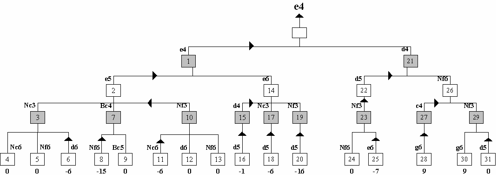
Figure 2.1: Full Game Tree
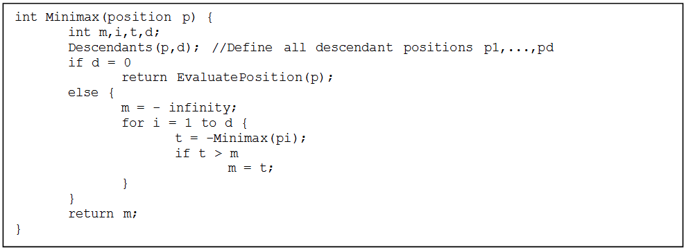
Figure 2.2: The Minimax Algorithm
Let us again consider Fig. 2.1 and the depth-first method of observing the tree, which is usually used in modern computer chess programs [39]. Assume that we have already searched the tree till leaf 8 which has an evaluation score of -15. We can see that the score at node 3 is -6 i.e. if white chooses the path to node 3, the worst score it may get is -6. But if it plays to node 7, it gets -15. This can be determined by just considering the first reply. It means that there is no reason to consider all other replies to the move at node 7 which have not been considered at the moment, since white will in any case play the move leading to node 3. In other words, we can simply skip considering leaf 9.
Using this line of reasoning, we can skip other leaves such as 12 and 13. The same procedure can be applied at the level above by reversing the logic i.e. taking the maximum instead of minimum. For instance, there is no reason to consider nodes 17 and 19 (and their children), since black will always choose the path leading to node 2. And finally, the entire sub-tree rooted at node 26 can be skipped, since white will always play to node 1, which gets a final score of -6, rather than to node 21, which already has a score of -7 with incomplete search.
The method described above is called α-β algorithm or α-β pruning and according to [39], was first presented in [42]. Later in [37], the topic was reviewed and strengthened with a proof of correctness and time complexity evaluation.
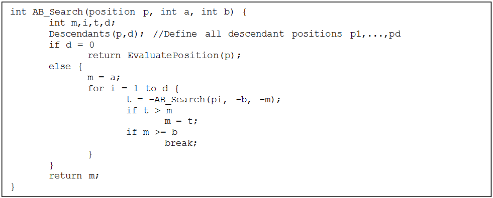
Figure 2.3: Alpha-Beta Pruning Algorithm
At every stage, when there is no need to examine the rest of the sub-tree, it is cut-off. Values α and β are white’s and black’s best scores found so far. The main advantage of this algorithm is that we get the same result as we would if the entire tree were to be examined. The sketch of this algorithm [37] is given in Fig. 2.3.
There are many ways to reach the same position in chess. For instance:
Hence it seems natural to prevent a program from considering the same position multiple times. To make it clear, consider two positions A2 and B3 and a 4-ply search depth. Assume that position B is now being searched and the move 3. Ng1 Nb8 has been just examined and there are still two plies left. Now, this position is exactly the same A which has already been evaluated. Therefore spending time on evaluating this position again will be equivalent of searching to a depth of 2 plies and not 4. Hence positions which are already seen are stored in Transposition Tables.
To implement such a table we need to uniquely identify every position the evaluation routine has seen. One way to do this (the most famous and widely used) was suggested by Zobrist in [48]. Zobrist suggested assigning a 32 or 64-bit random number to each piece located on each square; i.e. 12×64=768 numbers altogether. An empty square is assigned 0. A set of numbers is generated for different castling possibilities and for en passant capture status.
Then starting with a null hash key, a XOR operation is performed between the current hash key and the random number assigned for the piece on the square in question. The procedure is repeated for every square of the board. This value is then XORed with random numbers for castling and en passant possibilities. Finally, if it is black’s turn, the result is again XORed with another random number. This number is a hash key for the current position.
Of course the total number of positions in chess is much larger than the largest number which can be held in 64 bits. The probability of two positions to have the same hash key is small but greater than zero. Therefore it is possible to repeat the whole procedure described above with different random numbers, thus obtaining a second hash key for the same position. The probability of two different positions to have identical hash keys is small enough to provide uniqueness of positions within a single game.
There is no definite rule as to how a transposition table should be filled. This is because the size of hash keys as well as the size of the table depends on the resources available. Also, the number of unique hash keys is far greater than what can be stored in such tables. Therefore the hash keys must somehow be mapped onto the table indices. One method is to simply obtain the index as a remainder of the current hash key when divided by the size of the transposition table.
Hence in every game there will be a number of positions that will point to the same entry. To handle this, there should be a measure of the age of a position so that the chess engine knows if a certain position is old enough to be replaced with the new one. Naturally, the more entries a transposition table has, higher the probability of a position to be found in it.
Coming back to α-β pruning, it is very important to have moves ordered in such a way that there are as many cut-offs during the search process as possible. Evidently, the most cut-offs happen when the best moves are searched first. This problem is considered to be among the most important ones in the area of α-β search in computer chess.
Generally it is impossible to know in advance which move proves to be the best in every scenario, as otherwise there would be no need to search at all. Therefore all we can do is, use prior results and combine them with information about the current situation on the board in order to create a sequence of moves which is likely to be in the best order.
To start with, all capture moves are worth considering first. For simplicity, we do not talk about special cases such as when the reply makes a check with a fork4 to opponent’s queen or starts a mating attack. These situations are much rarer and are handled in some special way. Pawn promotion can also be considered as a capture move as it changes the material balance on the board.
Next, all checks should be considered and then rest of the moves. This approach however, uses only information at hand and is obtained for every position independently of the game history. Another refinement consists of storing details of the search performed so far. For instance, it does not matter if a pawn moves one or two squares if the reply is a queen capture (1. ... h5 2. Qxa5 or 1. ... h6 2. Qxa5 in Fig. 2.4). Therefore the sub-tree rooted at the queen capture can be cut-off and this move can be added to the top of the move list to be evaluated.
This idea is referred to as the Killer Heuristic and the moves that caused quick cut-offs are named killer moves. All this and some additional detailed information on the techniques used for move ordering can be found in [32] and [40].
As discussed previously, we can place some moves for the current position onto the top of the search list based on the scores they achieved a move ago. The History Table approach suggests a similar technique wherein we store information about all recently examined moves and not just the killer moves [32]. The advantage here is that, it is possible to accumulate information about the effectiveness of each move in the entire game tree unlike in Killer Heuristic where only a certain sub-tree is considered.
Each time a move proved to be good (caused a quick cut-off or achieved a high evaluation score), its characteristic which indicates how good this move is, is increased and the greater this characteristic, higher is the move’s privilege in the list. For example, the move that was placed among the best ones 2 plies ago will still have a good characteristic and can be placed at the top even if a different piece can move now. Thus in Fig. 2.4, after the game continued 1. ... Qxc3 2. Bxc3, white’s move Bxf6 (instead of Qxf6 a move ago) is still dangerous. Of course all this makes sense only for a certain period of time and hence the history table must be cleaned periodically.
Usually in chess, it is time that restricts the quality of moves in both humans and machines. As discussed already, a skilled human who uses type-B strategy and focuses on several mostly acceptable moves will generally fare well, whereas a machine cannot do so always. Therefore it is important for a machine to choose the best move within the given constraints (usually in a few seconds). Due to this sort of restrictions, machines usually cannot evaluate every move as desired by its algorithm.
Iterative Deepening tries to solve this problem. In this method, the program searches for moves in a breadth-first manner rather than the usual depth-first technique. In case the timer expires, it returns the best move belonging to the deepest level which has been searched completely. As stated in [32], the advantage of this method is that the number of nodes to be visited in successive iterations put together is generally much smaller than that of a single non-iterative search that goes depth-first. Another factor which influences the goodness of this technique is the fact that move ordering becomes easier when the search is made level by level which in turn improves the effectiveness of the α-β pruning algorithm.
Let us now consider one more shortcoming of regular search through the following example. Assume that the search depth is 5 plies and at the 5th ply there is a move which takes the opponent’s pawn with the rook. As it is the last ply and future moves cannot be considered, the evaluation function is called and the score is returned. Now the apparent result is that the moving side wins a pawn and therefore the move leading to this position is estimated as a favorable one.
But on the 6th ply, there may be a move with which the opponent simply takes back and goes a whole rook up. This kind of behavior, when a program is not able to see enough into the future, is called the Horizon Effect [20]. Of course, after the corresponding game path is chosen and a move is made, the game goes one level down and now the program can reach one level deeper and see the recapture. But what if the chosen move leads to the loss anyway? For example, instead of the rook capture there may be a bishop capture in the best case scenario. Situations such as these are unpredictable and dangerous.
Since every position during game play is not ready for the evaluation, only relatively quiescent positions [45] where the least possible action takes place should be evaluated (such positions are also called dead positions in [47]). This is why all capture moves and pawn promotions are usually considered separately and searched till a depth where the results of all material changes finally appear. In addition, moves are ordered in a special way depending on the taking piece and the piece to be taken in most valuable victim/least valuable aggressor manner.
More details can be found in [32]. Special considerations should also be given to check moves because they always allow only a few forced replies and the actual situation is not apparent. There may also be an explosion in the number of nodes to be considered when there is a series of checks given continuously. This situation can be resolved by limiting the number of extra plies given to inspect check moves. In [28] a value of 2 is said to be the mostly used one.
Null move [18] [26] [30] as the name suggests, means skipping a turn and allowing the opponent to play 2 moves in a row. The idea here is to see if the opponent can change the situation of the game adversely by playing twice. If the result of applying a null move is acceptable for the skipping side, there is no need to continue with the full search because it most likely leads to a cut-off [32].
The significance of this technique is that it takes away a whole ply from the current search tree and hence the program needs to traverse the search tree to a depth of N-1 instead of the original N. In the middle of the game, when the number of legal moves is about 30-35, applying null moves take only about 3% of the time. In case of success i.e. a null move results in chipping off one ply, the program saves 97% of the time required to make a move by pure searching. If the application of null moves fails, only 3% of the total time is wasted.
However, there are special situations known as Zugzwang5 in which a null move is the only way to avoid loss. But applying null moves to such positions will lead to mistakes. In position A of Fig. 2.5, black does not have a move which will maintain the current material balance. That is, any good move (such as Ke8, Kf8, Kf7, Kf6 or Rb7) allows white to win the pawn on d6. Other possible moves (such as Bc7, Rc7 or Ra7) lose even more material. The situation in position B is not so evident at first glance and requires deeper analysis.
Zugzwang positions are almost always losing. Therefore the loss of performance generally does not affect the final result. On the other hand according to [32], Zugzwang happens extremely rarely in chess with the notable exception of late endgames. Therefore application of null moves is usually stopped when the number of pieces left on the board is less than some predefined value. So the null move refinement is worth being implemented, especially if the aim is to increase search speed.
Since chess play can lead to so many different positions, it is often useful to memorize a few moves which can be played directly if a certain pattern occurs on the board. Therefore people started documenting games played by higher ranking players and analyze them so that popular or frequently occurring positions can be studied and the best moves for them can be memorized for future use.
Nowadays due to the advent of computer analysis, chess theory has become a huge body of knowledge. There are hundreds of books, some of which are entirely devoted to a single opening. These books discuss in detail the main lines that appear when starting a game with the opening in question and bring out ideas and ways to develop pieces which are proved to be the best.
Since computers were built to store and retrieve data efficiently, storing opening lines in a database gives computers the ability to make the best moves without any evaluation whatsoever. The same idea can be implemented for endgames which are also analyzed deeply and in many cases solved. Every position in an endgame database is assigned a value of +∞ (victory), -∞ (loss), or 0 (draw); the final result of the game assuming perfect play from both sides.
During move search if there is a positional match with a database entry, that position becomes a leaf of the search tree and receives the evaluation score from the database directly. According to [32], there are three different kinds of endgame databases available (though many more are available today):
Nalimov and its derivatives have gained more popularity among recent chess programs due to their considerable advantages in indexing and size. Thompson’s databases which were the first of its kind had a number of disadvantages such as slow search in the deeper levels of the game tree. Edwards’ tablebase tried a different approach based on the depth to mate which became a success but with the disadvantage of being huge in size. Nalimov’s tablebase is actually an improvement of Edwards’ original with advanced indexing schemes. More information can be found in [32] where there is an entire chapter devoted to endgame databases used by the famous chess program Dark Thought.
As said earlier, it is neither possible nor advisable to evaluate the whole tree of future moves at every stage of a chess game. Therefore we need some measure to quantify chess positions so that we can recognize good moves without having to traverse till the leaves.
In general, an evaluation function is a multivariate, linear function which measures the goodness of a chess position. There are various features which can be extracted from a chess position that will give us some insight into the goodness of the position. The inputs to the evaluation function are numbers which quantify these features. The output is a single number called the Evaluation Score.
| F = |
| xi · vi, : | ⎧ ⎨ ⎩ |
| , i = |
|
Here xi indicates the presence of the ith parameter and vi represents its importance as a real number. The position is good for white if this score is positive and vice versa. Also in some programs, a positive score is considered to be good for the current player and a negative score for the opponent.
A chess position is simply a legal permutation of pieces placed on different squares on the board. Each piece has a varying degree of importance and therefore a value is assigned to each of them. The sum of values of all pieces of a particular color is called the material count for that color. The difference between the material counts of white and black is known as material difference and is considered to be the most important parameter in deciding the goodness of a position.
The evaluation score is generally taken to be +∞ if the opponent’s king is checkmated and -∞ if the player’s king is checkmated. Trivial situations like ’king against king’, ’king against king and knight’, ’king against king and bishop’ along with more complex positions which have already been analyzed and known to be drawn positions are put into a database with a score of 0. This avoids redundant calculations which ultimately lead to wastage of resources.
However, in general it is not possible to claim equality of two positions taking into account only the material balance. In several opening lines, one side is ready to sacrifice a pawn on purpose; for e.g. king’s gambit accepted (1. e4 e5 2. f4 exf4) and queen’s gambit accepted (1. d4 d5 2. c4 dxc4). Here the program that uses an opening database must still somehow consider itself to be in an advantageous position, even after having one pawn less.
Sometimes a player can sacrifice quality (like exchanging an inactive rook for an active bishop or knight) for achieving some non-material advantage that is considered worthwhile. Moreover, highly skilled chess players often agree to call the game a draw even when there is material imbalance. So in all these situations, other factors apart from the material balance have to be taken into consideration during position evaluation. These factors are known as strategic or positional parameters.
In non trivial chess engines, it is usually the positional parameters which play an important role in evaluation and give the engine an edge during gameplay. With the amount of computing resources available today, these parameters when combined with fast pruning and deepening techniques can easily achieve IM6 if not the GM7 level. Therefore it is extremely important to incorporate them into our program if we want to build a competitive engine. Some of the most important ones are listed below:
There are many other parameters which can be considered like pawn structures and closeness of positions. But the ones mentioned above can be easily represented using PVTs9 which will greatly simplify the evaluation and learning process which is the main aim of this thesis.
Before genetic algorithms, we tried many other techniques which are considered to be good for machine learning. Since our main intention was to make a computer learn chess without any external help, our choices were limited to techniques which have the ability to interpret data and recognize underlying abstract patterns or features without human intervention.
That is, given a raw position the computer must be in a position to analyze its goodness without us having to tell the computer how to break this position down into a quantifiable features which can then be compared or learnt. In the next 2 sections, we briefly introduce Neural Networks and Deep Learning mechanisms which were used initially as learning tools and also explain why these techniques failed.
Artificial Neural Networks are inspired from Biology and extensively used in Pattern Recognition and Machine Learning. The fundamental building block for neural networks is a neuron. A neuron basically acts as an independent processing unit. Each neuron has a set of input links from other neurons, a set of output links to other neurons and an activation threshold. If the input is greater than this threshold, the neuron is activated. Within neural systems it is useful to distinguish 3 types of neurons:
These neurons are connected together in some fashion to from neural networks. Each connection between neurons are associated with weights which are the primary means of long-term storage in neural networks, and learning usually takes place by updating these weights.
There are 2 equations which represent the McCulloch-Pitts model for a neuron. They are:
| ζ = |
| wi · xi (3.1) |
| y = σ(ζ) (3.2) |
where ζ is the weighted sum of the inputs (the inner product of the input vector and the weight vector) and σ(ζ) is a function of the weighted sum. If we recognize that the weight and input elements form vectors w and x, the ζ weighted sum becomes a simple dot product:
| ζ = W · x (3.3) |
This may be called as either the activation function (in the case of a threshold comparison) or a transfer function. In neurons, the division between the process of calculating the input sum using the weight vecto, and the calculation of the output value using the activation function may not be made explicitly.
The inputs to the network, x, come from an input space and the system outputs are part of the output space. For some networks, the output space Y may be as simple as {0, 1} or it may be a complex multi-dimensional space. Neural networks tend to have one input per degree of freedom in the input space and one output per degree of freedom in the output space. The weight vector is updated during training by various algorithms of which the Backpropagation Algorithm is the most popular [3].
The backpropagation algorithm is one of the most popular and robust tools in the training of artificial neural networks. Backpropagation passes error signals backwards through the network during training to update the weights of the network. To make things clear, it is useful to define a term called interlayer to be a layer of neurons and the corresponding input weights to that layer. We use a superscript to denote a specific interlayer, and a subscript to denote the specific neuron from within that layer. For instance:
| ζjl = |
| wijlxil−1 (3.4) |
| xjl = σ(ζjl) (3.5) |
where xil−1 are the outputs from the previous interlayer (the inputs to the current interlayer), wijl is the weight from the ith input from the previous interlayer to the jth element of the current interlayer. Nl−1 is the total number of neurons in the previous interlayer.
The backpropagation algorithm specifies that the weights of the network are updated iteratively during training to approach the minimum of the error function. This is done through the following equations:
| wijl[n] = wijl[n−1] + δ wijl[n] (3.6) |
| wijl−1[n] = η δjlxil−1[n]+µ Δ wijl[n−1] (3.7) |
The relationship between this algorithm and the gradient descent algorithm should be immediately apparent. Here, η is known as the learning rate and affects the rate of convergence of the algorithm. If the learning rate is too small, the algorithm will take a long time to converge. If the learning rate is too large, the algorithm might oscillate or diverge.
µ is known as the momentum parameter. The momentum forces the search to take into account the direction of movement from the previous iteration. By doing so, the system will tend to avoid local minima and approach the global minimum. The parameter δ is what makes this algorithm a ’back propagation’ algorithm. We calculate it as follows:
| δjl = |
|
| δkl+1 wkjl+1 (3.8) |
The δ function for each layer depends on the δ from the previous layer. For the special case of the output layer (the highest layer), we use this equation instead:
| δjl = |
| (xjl − yj) (3.9) |
In this way, the signals propagate backwards through the system from the output layer to the input layer [2].
Initially we generated training data by logging each position considered by Stockfish [13] and its evaluation scores while playing 5 minute games against itself. Generally a good engine like Stockfish searches the game tree till it reaches a depth of 16. This means that on average, before making any move, the engine considers anywhere between 103 and 105 positions. Therefore it was possible for us to obtain a huge database of positions by making Stockfish play a tournament of about 100 games.
The positions were recorded in FEN1 format which could not be used as inputs to the network directly. Therefore, each position was converted into a binary string as follows:
This resulted in a binary string of length 262 (4×64+6) which could now be supplied as input to the network. A 2-layer backpropagation neural network with 262 inputs and 1 output was created and trained. After learning was complete, the evaluation module of Stockfish was replaced by our network and tournaments were conducted between the original and modified engines.
It was noted that, even though the network learned some abstract concepts like the importance of the queen over a rook, the gameplay was vague since position evaluation did not even come close to what was expected. The rate of learning was extremely slow and it took 48 hours of training to learn the aforementioned queen-rook importance. A 3-layer network showed no improvement.
The computations involved in producing an output from an input can be represented by a flow graph: a flow graph is a graph representing a computation, in which each node represents an elementary computation and a value which is the result of the computation and is usually applied to the children of that node. The set of computations allowed in each node and possible graph structures defines a family of functions. Input nodes have no children. Output nodes have no parents.
A particular property of such flow graphs is depth: the length of the longest path from an input to an output. Traditional feedforward neural networks can be considered to have depth equal to the number of layers (i.e. the number of hidden layers plus 1, for the output layer). Support Vector Machines (SVMs) have depth 2 (one for the kernel outputs or for the feature space, and one for the linear combination producing the output).
Depth 2 is enough in many cases (e.g. logical gates, formal [threshold] neurons, sigmoid-neurons, Radial Basis Function [RBF] units like in SVMs) to represent any function with a given target accuracy. But this may come with a price: that the required number of nodes in the graph (i.e. computations, and also number of parameters, when we try to learn the function) may grow very large. Theoretical results showed that there exist function-families for which in fact the required number of nodes may grow exponentially with the input size.
We can see deep architectures as a kind of factorization. Most randomly chosen functions can’t be represented efficiently, whether with a deep or a shallow architecture. But many that can be represented efficiently with a deep architecture cannot be represented efficiently with a shallow one (see the polynomials example in [19]). The existence of a compact and deep representation indicates that some kind of structure exists in the underlying function to be represented. If there was no structure whatsoever, it would not be possible to generalize well [12].
Convolutional Neural Networks (CNN) are variants of MLPs. From Hubel and Wiesel’s early work on the cat’s visual cortex [36], we know there exists a complex arrangement of cells within the visual cortex. These cells are sensitive to small sub-regions of the input space, called a receptive field and are tiled in such a way as to cover the entire visual field. These filters are local in input space and are thus better suited to exploit the strong spatially local correlation.
CNNs exploit spatially local correlation by enforcing a local connectivity pattern between neurons of adjacent layers. The input hidden units in the mth layer are connected to a local subset of units in the m−1th layer, which have spatially contiguous receptive fields. We can illustrate this graphically as follows:
Imagine that layer m−1 is the input retina. In Fig. 3.1, units in layer m have receptive fields of width 3 with respect to the input retina and are thus only connected to 3 adjacent neurons in the layer below. Units in layer m have a similar connectivity with the layer below. We say that their receptive field with respect to the layer below is also 3, but their receptive field with respect to the input is larger (it is 5).
The architecture thus confines the learnt ’filters’ (corresponding to the input producing the strongest response) to be a spatially local pattern (since each unit is unresponsive to variations outside of its receptive field with respect to the retina). As shown above, stacking many such layers leads to ’filters’ (not anymore linear) which become increasingly ’global’ (i.e. spanning a larger region of pixel space). For example, the unit in hidden layer m+1 can encode a non-linear feature of width 5.
In CNNs, each sparse filter is additionally replicated across the entire visual field. These ’replicated’ units form a feature map, which share the same parametrization, i.e. the same weight vector and the same bias. Replicating units in this way allows for features to be detected regardless of their position in the input field. Additionally, weight sharing offers a very efficient way to do this, since it greatly reduces the number of free parameters to learn. By controlling model capacity, CNNs tend to achieve better generalization especially in vision problems [7].
An autoencoder takes an input x∈[0, 1]d and first maps it (with an encoder) to a hidden representation y∈[0, 1]d′ through a deterministic mapping, e.g.:
| y = s(Wx+b) (3.10) |
where s is a non-linearity such as the sigmoid. The latent representation y, or code is then mapped back (with a decoder) into a reconstruction z of same shape as x through a similar transformation, e.g.:
| z = s(W′y+b′) (3.11) |
where ′ does not indicate transpose and z should be seen as a prediction of x, given the code y. The weight matrix W′ of the reverse mapping may be optionally constrained by W′=WT, which is an instance of tied weights. The parameters of this model (namely W, b, b′ and W′ if we do not use tied weights) are optimized such that the average reconstruction error is minimized. The reconstruction error can be measured in many ways, depending on the appropriate distributional assumptions on the input given the code, e.g., using the traditional squared error L(x,z)=||x−z||2, or if the input is interpreted as either bit vectors or vectors of bit probabilities by the reconstruction cross-entropy defined as:
| LH(x,z)=− |
| [xklogzk+(1−xk)log(1−zk)] (3.12) |
The hope is that the code y is a distributed representation that captures the coordinates along the main factors of variation in the data (similarly to how the projection on principal components captures the main factors of variation in the data). Due to the fact that y is viewed as a lossy compression of x, it cannot be a good compression (with small loss) for all x, so learning drives it to be one that is a good compression in particular for training examples, and hopefully for others as well, but not for arbitrary inputs. That is the sense in which an auto-encoder generalizes: it gives low reconstruction error to test examples from the same distribution as the training examples, but generally high reconstruction error to uniformly chosen configurations of the input vector.
If there is one linear hidden layer (the code) and the mean squared error criterion is used to train the network, then the k hidden units learn to project the input in the span of the first k principal components of the data. If the hidden layer is non-linear, the auto-encoder behaves differently from PCA2, with the ability to capture multi-modal aspects of the input distribution. The departure from PCA becomes even more important when we consider stacking multiple encoders (and their corresponding decoders) when building a deep auto-encoder [33] [9].
When shallow neural networks did not show promising results, the reason we attributed for the failure was the absence of an explicit feature extraction process which was omitted deliberately as we did not want the network to have any preconceptions about what it was learning. Therefore deep learning techniques were the obvious choice as they are essentially neural networks with a built-in feature extractor. Another factor influencing this decision was the fact that the features become more abstract as we go deeper into the network. This is how our brain constructs and understands complex concepts.
Initially 3 CNNs were constructed, each for one stage in the game; opening, middle game and end game. This is because the aim of a player at different stages of the game varies and it is not feasible for one network to learn everything. The idea here was that no matter what the position is, attacks and defense always follow a particular pattern. During attacks the king ring is hit at least by 2 or more pieces. A good defense consists of king safety, a successful castle, strong pawn structures near the king and so on. It is easy to see that all of these happen locally i.e. within some quadrant on the board.
As an example, let us take the king ring parameter. No matter where the king is on the board, he is said to be safe with good confidence if the ring is free from threats. Since CNNs learn spatially local patterns very well, it was expected to learn the underlying features of such positions if they exist. Again, due to the lack of computing power and training time, the networks’ learning rate was low.
A similar process was carried out with Autoencoders and the same problem recurred. This failure made us think deeper into the root cause of the problem; we were asking the network to recapitulate centuries of chess theory with limited data in very limited time just to learn what we already know. Therefore we decided to formulate the problem with an entirely different perspective:
This led us to Genetic Algorithms.
Genetic Algorithms aim mainly at solving optimization problems by means of applying the principle of natural selection seen in living organisms. Genetic Algorithms borrows heavily from phenomena such as adaptability of life to environmental changes, inheritance of the vital properties by descendants and of course natural selection, following the ’survival of the fittest’ paradigm from Darwin’s theory of evolution [24]. In scientific literature, the idea of mimicking evolution to form genetic algorithms was first proposed by John Holland in 1975 [34]. In his work, Holland suggested a schematic of how a genetic algorithm would look like. In 1989, David Goldberg created a simple Genetic Algorithm [31] and its first famous computer implementation (using Pascal).
In biological systems which act as an inspiration for genetic algorithms, chromosomes are seen as the fundamental building blocks. The set of chromosomes of a living organism is called the genotype and the organisms which posses a particular genotype are called the phenotype. The parts constituting a chromosome are referred to as genes, which are located on different loci. Each gene controls the inheritance of one or several alleles. In artificial genetic systems a different terminology is accepted [31]. A comparison between the corresponding terms is given in Table 4.1.1.
The basic component of a genetic algorithm is the individual1. An individual is a potential solution to the problem at hand. A collection of many such individuals form a population. Each individual is usually a string of values, each of which represents a parameter which is being optimized. Each value is called a feature and is identified by an index. Features can be whatever makes sense for the problem being solved.
For example, in [41] a function maximization problem is considered with two variables and binary chromosomes2 are used to represent these variables. In [23] integer chromosomes are used to solve the N-Queens problem and in [27] the chromosome is a specially designed data structure used to solve a job scheduling problem. Each of these articles solve different problems using an identical algorithm with the difference being in how they represent potential solutions.
When applying genetic algorithms, the chromosome acts as a storage of features i.e. it entirely describes a potential solution. Genetic algorithms operate on populations in a temporal manner. A population at any given point in time is called a generation. Each individual in a generation is evaluated using some fitting criterion. This criterion is unique to the problem at hand. The fittest individuals are allowed to reproduce by means of genetic operators and will result in the formation of a new generation.
As new generations are born, the individuals get fitter and hence tend towards optimality. This is why choosing the right parameters for the chromosome is considered to be the most important activity during the formulation of a genetic system. If the wrong parameters are chosen for optimization, the resultant values though optimized, will fail to solve the problem.
In genetic algorithms, it is important for individuals to reproduce in a manner that will somehow imbibe their traits to the offspring while allowing them to have their own individuality. This helps the solutions to avoid local optima and eventually reach the global optimum. There are two classical genetic operators which allow individuals to do this; Crossover and Mutation.
At its simplest, crossover takes 2 chromosomes from the current population, selects an index randomly which is called the crossover point and interchanges the parameters of the parents from that point onwards. To understand the idea better, let us consider its visual representation. Assume x1 and x2 are 2 chromosomes of length ’8’. Let us also assume that the crossover point is ’3’. Now, the chromosome is divided into 2 parts as shown in Fig. 4.1. The first part of x1 is attached to the second part of x2 and vice versa to form 2 new individuals or offspring.
Mutation is the process of changing some parameters in the chromosome to avoid recycling of parameters (after some generations of evolution, there might come a point where the parameters remain constant even after crossovers) which will ultimately result in the system being stuck in a local optimum. After obtaining offspring from crossover, some indices are chosen and the values of the parameters at those indices are changed according to some rule. In Fig. 4.2, a single mutation point is chosen (index ’1’) and hence the value of the first parameter is flipped.
There exist more complex variations of these genetic operators such as two-point crossover and two-point mutation. In two-point crossover, a chromosome is divided into 3 parts and the middle ones are exchanged. In two-point mutation, values at 2 positions are changed. This process can be extended for multi-point operators [41].
There is another genetic operator which is seldom used called Inversion. Simple inversion selects 2 points along the length of a chromosome and the parameters between these 2 points are reversed [41].
Before crossover and mutation are applied, each chromosome needs to be evaluated and the fittest among them should be separated. This process differs from problem to problem. Some of the most popular techniques are:
There are also other static and dynamic selection methods in which the selection probabilities remain constant and vary over the generations, respectively [41]. We can also develop selection procedures tailor made for our problems. One element which remains constant in all these techniques is a function which evaluates the goodness of each potential solution. This function is called the fitness function. Every solution is analyzed and given a fitness value which determines whether it is eligible for reproduction or not.
CuckooChess [43] is an advanced free open source chess program under the GNU General Public License written in Java by Peter Osterlund. It contains many of the standard algorithms for computer chess discussed previously such as iterative deepening, quiescence search with SEE pruning, MVV/LVA move ordering, hash table, history heuristic, recursive null moves, opening book and magic bit boards. It also uses some advanced techniques like Negascout, aspiration windows, futility pruning and late move reductions [8]. We have cloned this engine and modified it to suit our needs. These modifications include:
Each point is explained in detail in the future sections. Fig. 4.3 is a flowchart which gives an overview of what is going on under the hood.
Usually evaluation functions consider almost if not all the parameters discussed in the Positional Parameters section. But we wanted the evaluation to be totally dependent on whatever the computer learns on its own and nothing else. Therefore we needed to formulate the problem in such a way that the engine itself recognizes the relative importance of each parameter. This requirement forced us to use PVTs.
A PVT is a grid of numbers which indicate the best squares for a piece to occupy. Greater the number, better is its position. For example, Fig. 4.4 shows the PVT for a black knight. It is easy to spot that the values at the center of the board are higher than those at the corners. This means it is desirable for the knight to be on the central squares rather than the corners.
By carefully constructing these PVTs, we can quantify most of the positional parameters. Even though some of the abstract ones such as rook behind a past pawn cannot be described using this technique alone, combining this with other search algorithms it is possible to get more accurate evaluation scores. This is achieved by using PVTs for move ordering by arranging moves in descending order of the PVT values for the destination squares.
It is easy to see that each piece must have its own PVT. Also, most of the pieces have different responsibilities at different junctures of the game. Therefore it is necessary to maintain different PVTs for middle and end games (PVTs for openings are not required as moves are made using opening books). Table 4.2 shows the various PVTs that are maintained in our engine.
Every potential solution (player/individual in the population) should have a chromosome which will influence its gameplay. A good chromosome will often lead to victory where as a bad chromosome will result in a loss. In our program, each value in every PVT is considered as a parameter to be optimized. Therefore, all the PVTs are joined together to form a chromosome as shown in Fig. 4.5.
This is essentially a single dimension array containing 640 floating point numbers (we club together the 10 PVTs mentioned in Table 2, each having 64 values). From here on, the problem of learning reduces to an optimization of these 640 values.
First, a population of 20 players is created. The players’ chromosomes are randomly initialized. At this stage, the players make random and losing moves. They are pit against each other in a round-robin tournament where each player plays at least 3 games and the results are recorded. The players get 1 point for a win, 0.5 for a draw and 0 for a loss. After the tournament is finished, the results are tabulated and these points are used as an indicator of their chromosomes’ fitness level.
The winner and the runner-up are called elites as they are the best solutions found in the current generation and they are retained as it is for the next generation. The other players in the top 10 are allowed to reproduce among themselves using single-point crossovers with a probability of 0.8 to create 18 offspring and the previous generation is discarded. Next all the new players except the elites undergo randomized mutation with a probability of 0.02. The elites and the offspring form the new generation. This process is repeated till any of the following end conditions are met:
Fig. 4.6 clearly illustrates and summarizes the entire process. One problem in this technique is that, it always finds a single solution. But as we know, there is no one right way to play chess. The style of a player who plays attacking chess cannot be compared to that of a player who prefers defensive positional play. Both may be equally good. It is therefore safe to assume that, a mathematical function representing position evaluation (if it exists) is multimodal. Hence it is desirable for us to get solutions representing most if not all the modes of the function.
The problem with simple genetic algorithms is that it will eventually converge to one of the many global optima (if they do not get trapped in local optima) which depend on the initial population and the random genetic drift [44] occurring throughout the run. Eventually we will get copies of the same individual in one of the valleys/plateau.
For instance, consider a simple function f(x)=sin(x2). A plot of the function along with the position of the individuals (red marks) trying to find the minimum is shown in Fig. 4.7 [15].
As we can see this function has more than one minimum and we want our algorithm to find the other minimum as well. This is where the concept of niching comes in handy. Niching is a general class of techniques that promote the formation and maintenance of stable sub-populations in a genetic algorithm. 2 main objectives of such techniques are:
Fig. 4.8 shows how individuals have converged onto 2 separate optima for f(x)=sin(x2) when using niching. There are many approaches to niching and the one used here is called multi-niche crowding (MNC).
Crowding [25] is a generalization of pre-selection. In crowding, the selection and reproduction processes are the same as those carried out in simple genetic algorithms, but the replacement process is different. Let us assume that 2 parents produce 2 offspring. In order to make room for the newborns, it is necessary to identify 2 members from the population for replacement. The policy of replacing a member of the present generation by an offspring is carried out as follows:
Crowding is essentially a successive replacement strategy. This strategy maintains the diversity in the population and postpones premature convergence. However generic crowding cannot maintain stable subpopulations for long due to selection pressure5.
In multi-niche crowding (MNC), both selection and replacement steps are modified with some type of crowding. The idea is to eliminate the selection pressure caused by fitness proportionate reproduction (FPR) while allowing the population to maintain some diversity. This objective is achieved in part, by encouraging mating and replacement within members of the same niche while allowing for some competition for slots among the niches. The result is an algorithm that (a) maintains stable subpopulations within different niches, (b) maintains diversity throughout the search, and (c) converges to different optima.
In MNC, the FPR selection is replaced by what is called crowding selection. In crowding selection, each individual in the population has the same chance for mating in every generation. Application of this selection rule takes place in two steps. First, an individual A is selected for mating. This selection can be either sequential or random. Second, its mate M is selected, not from the entire population, but from a group of individuals of size Cs, picked at random (with replacement) from the population. The mate M thus chosen must be the one who is the most ’similar’ to A. The similarity metric used here is not a genotypic metric such as the Hamming distance, but a suitably defined phenotypic distance metric. Crowding selection promotes mating between individuals from the same niche while allowing mating between individuals from different niches.
During the replacement step, MNC uses a replacement policy called worst among the most similar. The goal of this step is to pick an individual from the population for replacement by an offspring. Implementation of this policy follows these steps. First, Cf groups are created by randomly picking s individuals (with replacement) per group from the population. These groups are called crowding factor groups. Second, one individual from each group that is most phenotypically similar to the offspring is identified. This gives Cf individuals that are candidates for replacement by virtue of their similarity to the offspring that will replace them. From this group of most similar individuals, we pick the one with the lowest fitness to die and that slot is filled with the offspring. The offspring could possibly have a lower fitness than the individual being replaced [21].
Thus, we replace our vanilla genetic algorithm with MNC which helped us find multiple optimal solutions which are then stored in a database of chromosomes (the details of best chromosome found in all the runs can be found in Appendix A). When the chess engine is asked to play, it selects one from the database and re-forms PVTs from the chromosome and uses it to make moves.
The best way to test a chess engine is to make it play against other engines. This can be daunting and painfully slow if there is no common language through which the engines can communicate. In chess programming circles, there exist 2 protocols which are used as standards while building chess engines. They are:
UCI is more robust and is supported by most of the prominent engines today. Therefore our engine also communicates through UCI. More information about this protocol can be found in [14]. Many chess GUIs also are UCI compatible and hence it is easy to plug our engine into a GUI such as Arena [1] and actually see the games being played, rather than read the PGN.
Our engine was tested against the original CuckooChess engine as it would provide us with a clear benchmark about any improvements achieved. A total of 1000 games were played and recorded with a time control of 3 seconds per move. The games were then analyzed using the EloStat algorithm developed by Frank Schubert. This algorithm calculates the Elo rating [10] of a player provided the rating of the opponent is known. The results are tabulated below.
CuckooChess is rated at 2530 according to CCRL (Computer Chess Ratings List). After 1000 games, it was seen that our modified engine outperformed its parent with a rating of 2546 (an increase of 19 points). This rating puts our engine in the ’International Grandmaster’ category. A link to the PGN of all the games played can be found in Appendix A.
Even though the increase in rating seems small, it should be noted that the rise in rating is tapered off gradually when large number of games are played with an opponent of similar strength. It can be seen that our engine has won 422 games compared to the 328 games won by CuckooChess. This indicates that there is a considerable increase in the strength of our modified engine.
Also it has to be noted that the solution we obtained is not optimal. It can be seen clearly in the chromosome (see Appendix A), where some parts of the PVTs seem random. This is because it is not possible for the algorithm to find out which mutations will help and which do not. This will result in the replacement of some good values with random ones. Therefore there is still room for improvement in the engine if we can find a way to mutate only bad genes.
This thesis provides a new perspective for designing complex self-learning programs whose purpose is to mimic human behavior. As we can see in the results section, the engine is not a world class one by any stretch of imagination. But it was never meant to be. The intention was to find a way to reduce abstract and complex concepts of chess into something that a computer understands.
Shallow and deep neural networks which are considered to be the future of machine learning and computer vision failed to give good results here probably because:
The ’no external help’ and ’no explicit feature extraction’ rules which we abided by forced us to convert a learning problem into a problem of optimization. We found a clever way to formulate the problem in such a way that all the positional and other parameters were converted into a group of numbers using PVTs. Multimodal optimization of a large number of parameters seems to be an area where research has come to a standstill in recent years with many open questions left to be answered. Multi-Niching and Crowding which give us the best shot at solving such problems allowed us to optimize parameters efficiently.
This work concentrates only on learning chess evaluation. The underlying search algorithms remain the same. In the future, one can extend the engine by using some heuristic similar to PVTs which stores information about position patterns and eliminate or at least minimize the role of complex search techniques like iterative deepening. Also, one could increase the efficiency of search algorithms by pruning out moves using past experience and avoid futile evaluations which will speed up the engine.
The engine played its best chess when this chromosome was used. As we can see, some sections of PVTs seem random. This is due to the fact that even after 1000 generations of evolution, this solution is sub-optimal.
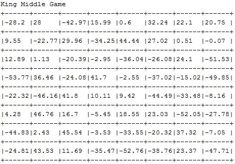
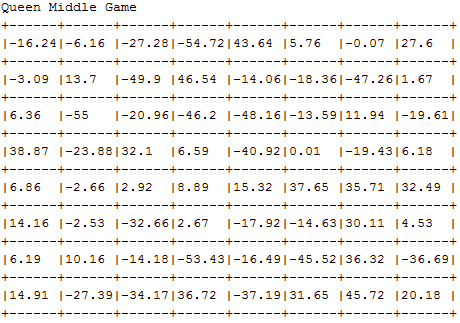
> 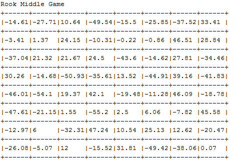
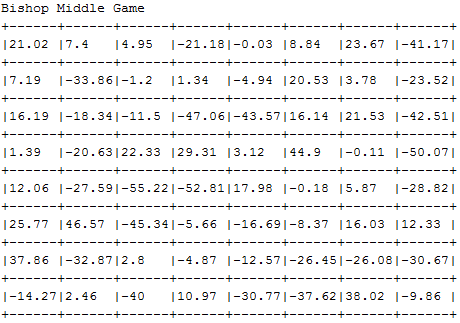
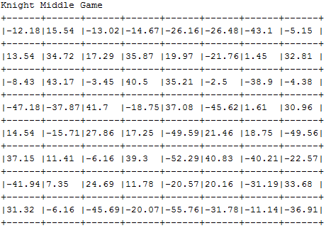
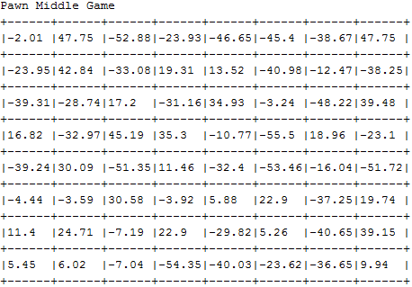
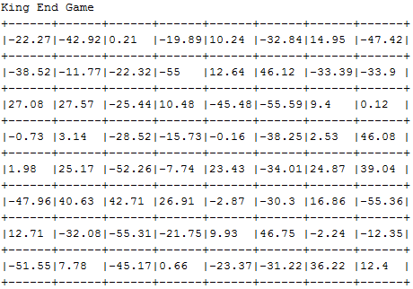
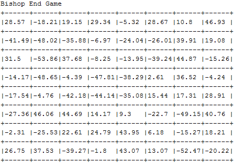
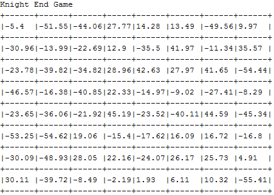
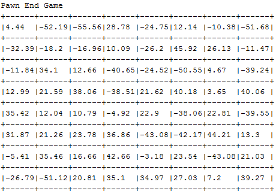
This document was translated from LATEX by HEVEA.